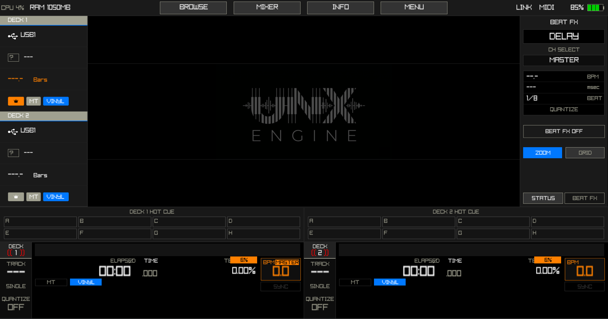

The free and open-source C++ foundation for the global DJ community. High-performance and cross-platform, empowering hobbyists to build the future of custom hardware.

The UNX Engine isn't just another DJ software—it's a foundation. We provide the high-performance core so you can focus on building the ultimate performance tool, whether it's an embedded hardware mod or a next-gen desktop app.
Showcasing custom implementations and development milestones
We are currently gathering the most innovative custom implementations and hardware mods from our early adopters. Stay tuned as we showcase the community's creativity.
Proprietary Audio Routing & DSP Pipeline
Join the community and help us build the next generation of DJ technology.